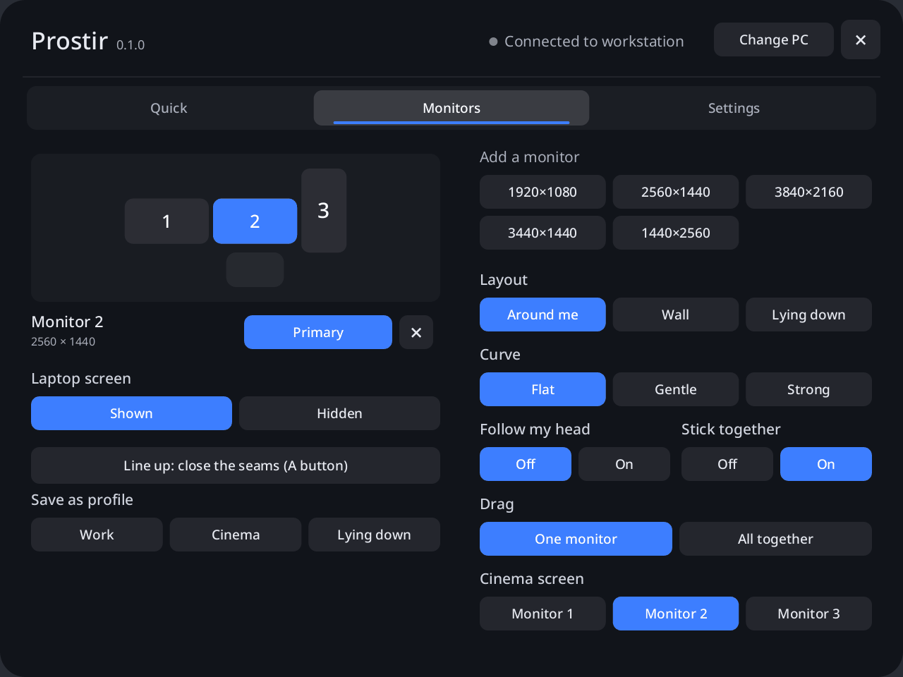
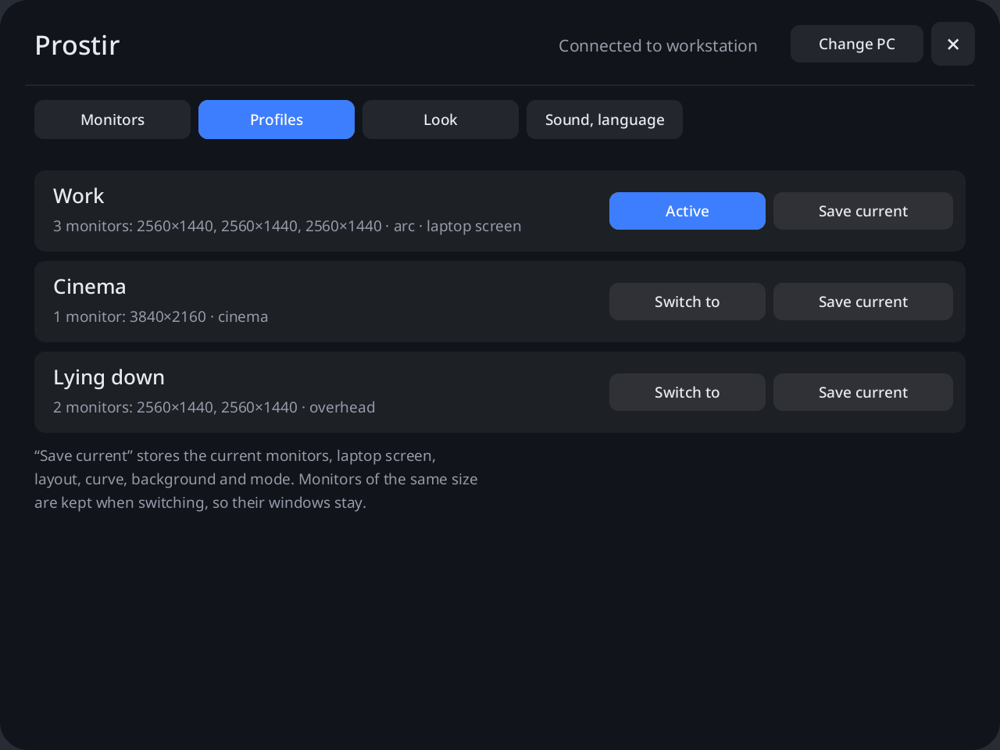
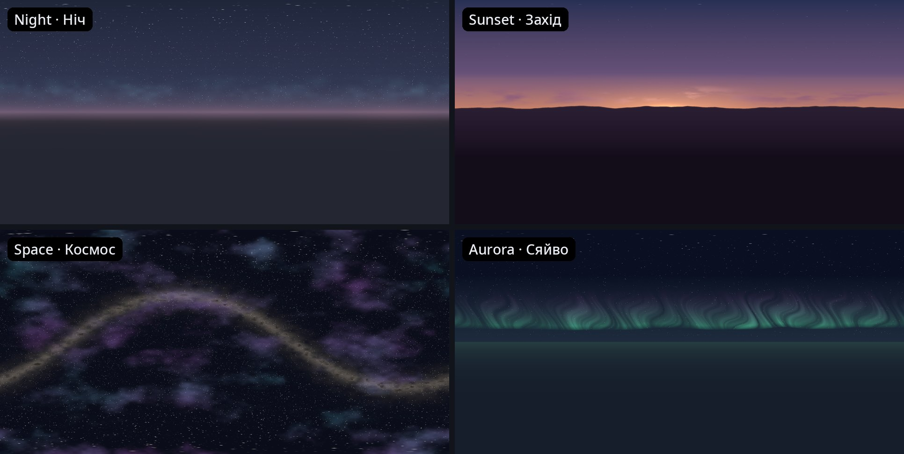

Extra monitors for KDE Plasma, inside a Quest 3
Real KWin outputs around you. Windows, the panel and the mouse move across them as if the monitors stood on your desk.

Real monitors, not pictures of windows
Each one is an output in System Settings → Display. Drag windows onto it, maximize them, put the Plasma panel there.
Lift a monitor above another in the headset and KDE puts it above too, so the mouse goes up where you look.

Touch the menu
With your hands in view, the menu opens within reach and works like a touchscreen. Add a 1080p, 1440p, 4K, ultrawide or portrait monitor; move it, make it primary, curve the row.

From the encoder to the headset display over Wi-Fi on the author's laptop. The PC encodes on the GPU and the Quest decodes in hardware, straight into its compositor, so text stays sharp.

Work, cinema, lying down
Profiles switch the monitors, the laptop screen, the layout and the background in one press. Monitors of the same size stay, so their windows do not move.

The laptop screen too
It hangs under the main monitor without a seam and disappears when you close the lid.
Focus mode
Every monitor except the one with the mouse gets darker.
Sound and microphone
PC sound plays in the headset, and PC apps hear the headset microphone while they record.
Headset off, desk back
After 10 seconds off your head, windows, panel and sound return to the laptop.
Keyboard window
A rectangle over the real keyboard shows the desk through the cameras.
Paired and encrypted
A PC streams nothing to a headset it has not been paired with.
Install
On the PC
- Download
prostir-<version>-x86_64-linux.tar.gzfrom Releases. - Unpack it and run the installer. It installs into
~/.localand needs no root.tar xf prostir-*-x86_64-linux.tar.gz cd prostir-*/ ./install.sh --autostart - Start Prostir from the application menu. Its icon appears in the tray.
On the headset
- Turn on developer mode in the Meta Horizon phone app: Devices → Headset settings → Developer mode.
- Connect the headset with a USB cable and install the APK from the same release:
adb install prostir-*.apk - Open Prostir from Library → Unknown sources. The headset finds the PC on the same Wi-Fi network or over the cable; the first time, type the 6-digit code it shows into the dialog on the PC.
Requirements and limits
PC
- KDE Plasma 6 on Wayland. GNOME and X11 sessions are not supported.
- Intel or AMD graphics with VA-API encoding. NVIDIA works only with
--software, which encodes on the CPU. - PipeWire and GStreamer 1.22 or newer with the
vaplugin.
Headset
- Meta Quest 3, where it is tested; Quest 3S should behave the same. Quest 2 and Pro are untested.
- Developer mode to install the app; it is not in the Horizon Store yet.
- One headset per PC at a time.
Version 0.1, used every day by its author on Plasma 6.8 with Intel Arc graphics. Problems and ideas go to GitHub issues.